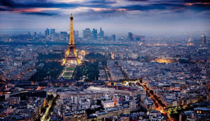
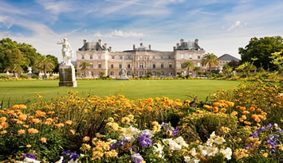
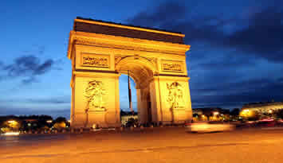

Welcome to Caitlin's Travel Log: France
CAPITAL: Paris
France remains the world's number one tourist destination, and it's not hard to understand why. France has it all - or more or less. It has tourist sights for all tastes; it has some of the greatest beaches in Europe, as well as the highest mountains and the finest historic monuments, the most beautiful cities, the most idyllic countryside, the most magnificent castles, the finest rivers, and plenty more, not to mention some of the best restaurants and the finest wines and more hotels than any other country in Europe.
France has something for everyone, which is one of the reasons why it remains the world's number one tourist destination. It has magnificent holiday opportunities for everything from a short weekend city break, in places such as Paris, Nice or Bordeaux, to a relaxed family holiday in a gite in the countryside, a week or two's relaxation by the seaside, or an energetic break hiking, climbing, kayaking or cycling in France's great outdoors.
Paris, France:

Paris is the political, cultural, and intellectual capital of France, and is also the single-most visited city in the world. It has drawn waves of immigrants, expatriate artists and intellectuals, and global traders for centuries, attracting by virtue of its vibrant economy, rich political and artistic history, unusual number of noteworthy tourist sites, outstanding architecture and cultural life, and overall high standard of living. Situated at the crossroads of Europe and in close range of the English channel and other strategic places for military and trade, Paris is a true powerhouse in continental Europe.
Things to do?
Paris's seductive charms are legendary, and for good reason. Inviting sidewalk cafes, gleaming boutiques, world-class museums, and a fabled restaurant scene make Paris the runway model of cities—beautiful, fashionable, confident, and inspiring envy at every turn. But with expectations running so high, Paris can—yes, it's true—occasionally disappoint. When you find yourself elbow to elbow with throngs of tennis shoe-wearing tourists, tucking into yet another overpriced meal, you'll wonder how the Paris that travelers fall in love with has proved so elusive. Unless, that is, you read and discover how to avoid the top ten mistakes first-timers make in the City of Light.

Getting here and around
If you are like me you will walk. This is for two reasons. One I like walking because it is the best exercise you can do and in a city like Paris there is plenty to see when traveling on foot. The other reason is because I am mentally lazy and for me it is easier to walk two hours to get somewhere then it is to take two minutes to learn which bus or metro to take that will get me there in ten minutes. Luckily there are plenty of people not like me that keep the buses and metro in Paris in business.
The Metro:
The Paris metro is one of the oldest and one of the best systems in the world, right up there with London and New York. There are around 300 stations connected by nearly 300kilometers of track. You can get within a couple blocks of anywhere you want to go. The metro runs from 5am to 12:30am and for the price of a ticket you can ride around all day long if you like. (as long as you don't leave the system). Tickets can be bought at the ticket booth in the station one at a time, by ten or by 1-day, 2-day, 3-day, 5-day, Le Paris Viste tickets for tourists. There are also weekly and monthly tickets called the Carte Orange. It's a travel pass good for unlimited travel on the paris metro and bus network. You need a passport photo to buy this, but if you use the metro a lot it's worth it. (more that 6-8 times a day). When you use your tickets stick it in the turnstyle slot and then take it when it is returned to you and keep it with you during your trip. Occasionally the check and getting caught without one can be embarrassing as well as expensive. You can get metro maps at the stations and they are posted all over the system. You can also find them in most of the guidebooks though some are so small you will need a magnifying glass. If you can master the Paris metro system you will travel around the city in confidence and never want to leave. The maps are color-coded so all you have to do is find the station you want to go to and find the line that goes there and see what the final destination for that train is. Then follow the signs for that destination and when the train comes get on and just remember to get off at your stop.

History
The history of Paris goes back more than 2,000 years when some 60 Celtic tribes called the Gauls inhabited the region, most notably in the Paris Basin on the Ile de la Cité. One of their tribes, the Parisii, eventually gave their name to the present-day city. The Gauls were composed of warrior tribes who hunted, fished, and lived in huts with thatched roofs. Their religion, called druidism, celebrated nature. Many present day religious festivals include remnants of druidic worship. The main festival, la fête du gui (mistletoe), welcomed in the new year. They also burned the Yule log to celebrate the return to light after a long dark season of winter. Their chief warrior, Vercingétorix, was defeated by the Roman army under Julius Caesar (c. 100–44 B. C. ) in about 50 B. C. The Romans renamed the Gaulish capital Lutetia, which it remained until it was reconquered by a Germanic tribe called the Franks—hence the name for present day France (land of the Franks). Their king, Clovis (465–511) converted to Christianity and took the old name of Paris for its capital. By brute force, Clovis established the Merovingian dynasty of kings and established a code of laws known as the Salic Law. In 800, Charlemagne (747–814) moved his capital from Aix-la-Chapelle to Paris, thus solidifying Paris as the permanent capital city of what would become modern day France. Between 900 and 1000, another tribe of invaders called Vikings (actually Norsemen) repeatedly invaded and pillaged Paris until they eventually became a civilized part of the community.
©Caitlin Bero 2015 |